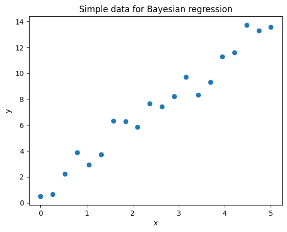
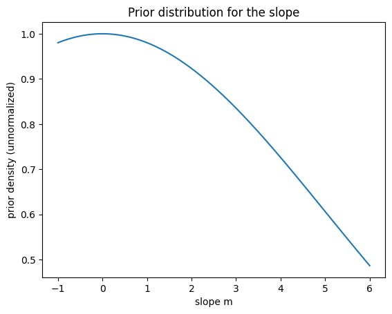
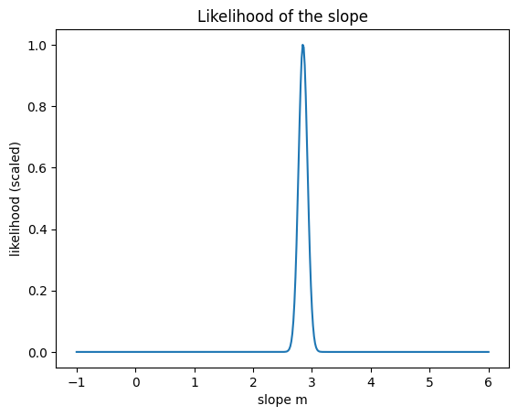
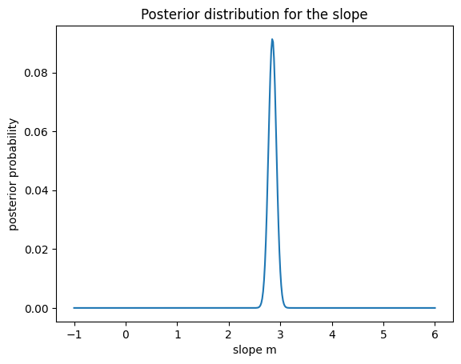

This notebook introduces the basic idea of Bayesian regression in the simplest possible way.
We will focus on four ideas:
Prior: what we believe about the slope before seeing the data
Likelihood: how well each slope explains the observed data
Posterior: updated belief after seeing the data
Prediction with uncertainty: Bayesian methods give a range of plausible values, not just one answer
We will use a very small example with one input feature and a fixed intercept of 0 so that the main idea is easy to see.
1. Create a tiny synthetic dataset
We make data from a simple line with some noise:
[ y = 3x + ]
We pretend that we do not know the true slope. Our job is to estimate it.
import numpy as npimport matplotlib.pyplot as pltnp.random.seed(42)# Simple one-feature datasetx = np.linspace(0, 5, 20)true_slope =3.0noise = np.random.normal(0, 1.0, size=len(x))y = true_slope * x + noiseplt.scatter(x, y)plt.xlabel("x")plt.ylabel("y")plt.title("Simple data for Bayesian regression")plt.show()

2. Define a prior over the slope
In Bayesian statistics, we start with a prior.
Here, the unknown quantity is the slope (m) in:
$ y = mx $
We choose a simple prior:
$ m (0, 5^2) $
This means: - before seeing the data, we think slopes near 0 are more likely - but we still allow a wide range of possible slopes
# Candidate slope valuesm_grid = np.linspace(-1, 6, 400)# Prior: Normal(mean=0, std=5)prior_mean =0prior_std =5prior = np.exp(-0.5* ((m_grid - prior_mean) / prior_std) **2)plt.plot(m_grid, prior)plt.xlabel("slope m")plt.ylabel("prior density (unnormalized)")plt.title("Prior distribution for the slope")plt.show()

3. Compute a simple likelihood
The likelihood asks:
If the slope were (m), how well would it explain the observed data?
We assume the noise standard deviation is known and equals 1.
For teaching purposes, we compute the likelihood on a grid of slope values.
sigma =1.0# Compute likelihood on the gridlog_likelihood = []for m in m_grid: y_pred = m * x log_like =-0.5* np.sum(((y - y_pred) / sigma) **2) log_likelihood.append(log_like)log_likelihood = np.array(log_likelihood)# Stabilize numerically before exponentiatinglikelihood = np.exp(log_likelihood - np.max(log_likelihood))plt.plot(m_grid, likelihood)plt.xlabel("slope m")plt.ylabel("likelihood (scaled)")plt.title("Likelihood of the slope")plt.show()

4. Combine prior and likelihood to get the posterior
Bayesian updating is:
$ $
The posterior tells us which slope values are most plausible after seeing the data.
posterior_unnormalized = prior * likelihoodposterior = posterior_unnormalized / np.sum(posterior_unnormalized)plt.plot(m_grid, posterior)plt.xlabel("slope m")plt.ylabel("posterior probability")plt.title("Posterior distribution for the slope")plt.show()

5. Find the most plausible slope and compare with the true one
A simple summary of the posterior is the slope value with the highest posterior probability.
This is called the MAP estimate: - MAP = maximum a posteriori - it is the peak of the posterior
So far, we built a simple Bayesian model manually using a grid of possible slope values.
In practice, we usually use libraries that: - estimate the posterior automatically - handle multiple parameters - provide uncertainty estimates
Here we use BayesianRidge from scikit-learn.
Key ideas: - The model assumes a prior over the coefficients - It updates this using the data (likelihood) - The result is a posterior distribution over parameters
Unlike standard linear regression, this model: - returns a mean prediction - also provides uncertainty (standard deviation)
from sklearn.linear_model import BayesianRidgeimport numpy as npimport matplotlib.pyplot as plt# Recreate the simple datasetX_simple = np.linspace(0, 10, 20)y_simple = y# Reshape X for sklearnX_sklearn = X_simple.reshape(-1, 1)# Fit modelmodel = BayesianRidge()model.fit(X_sklearn, y_simple)# Prediction gridX_test = np.linspace(0, 10, 100).reshape(-1, 1)y_pred, y_std = model.predict(X_test, return_std=True)# Plotplt.figure(figsize=(6, 4))plt.scatter(X_simple, y_simple, label="Data")plt.plot(X_test, y_pred, label="Mean prediction")plt.fill_between( X_test.ravel(), y_pred -2* y_std, y_pred +2* y_std, alpha=0.2, label="Uncertainty (±2 std)")plt.title("Bayesian Ridge Regression")plt.legend()plt.show()print("Estimated slope:", model.coef_[0])print("Estimated intercept:", model.intercept_)
In this notebook we used a very simple one-parameter example so the main ideas stay visible.
In more realistic Bayesian regression: - the intercept is also unknown - there can be many features - we usually use more advanced tools rather than a grid over one parameter